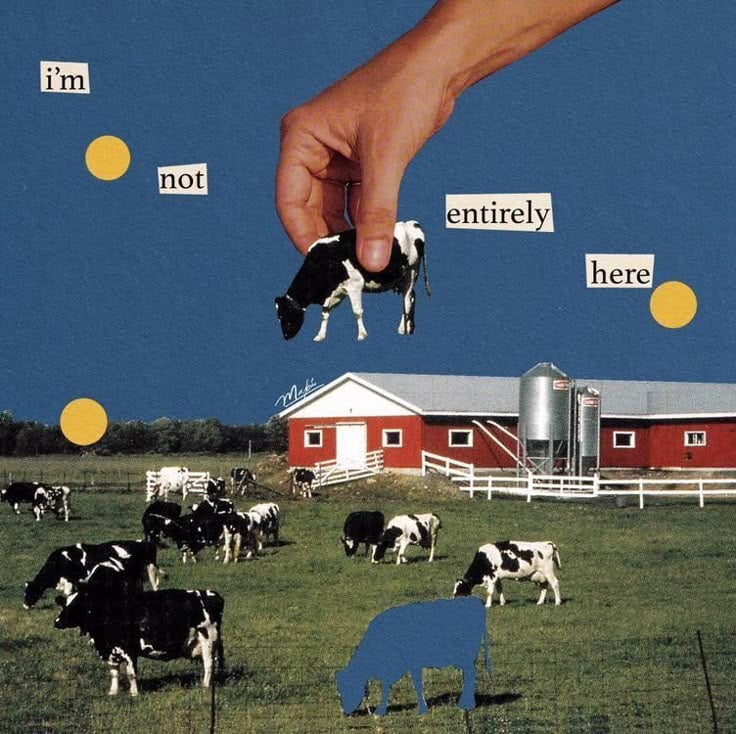
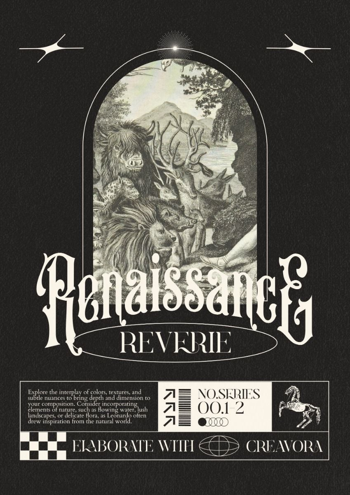

The overlapping elements are styled to evoke a sense of visual layering and depth, like a carefully composed collage where each piece interacts harmoniously with the others. Subtle hover transformations and floating movements give the composition a living, tactile quality, turning the layout itself into a dynamic piece of art.
Surrealist collages conceal the sutures between the constituent units, thereby emphasizing the final image’s “reality” rather than the procedures and materials of its creation.
Future Medieval borrows from the rich visual history of the Middle Ages, blending it with contemporary design practices. This trend is characterized by the resurgence of blackletter typography, intricate ornamental designs, and gothic imagery. Designers are turning to these elements to create work that feels both otherworldly and deeply rooted in history.
